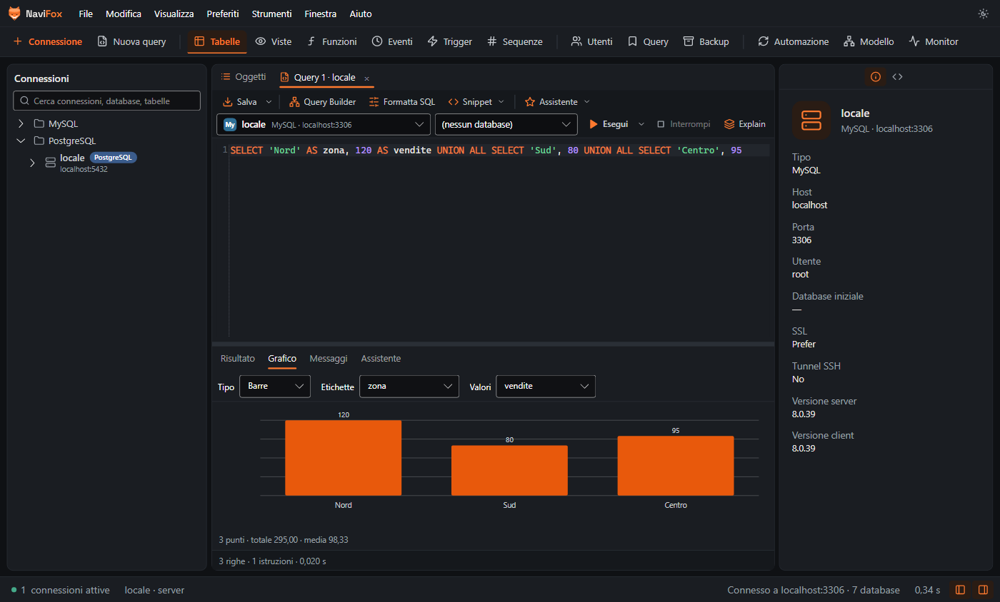
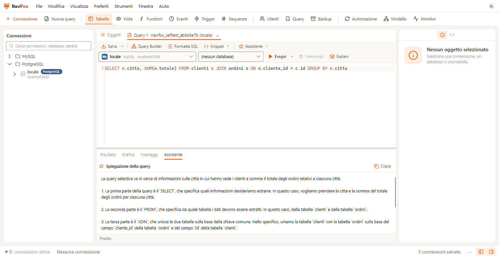
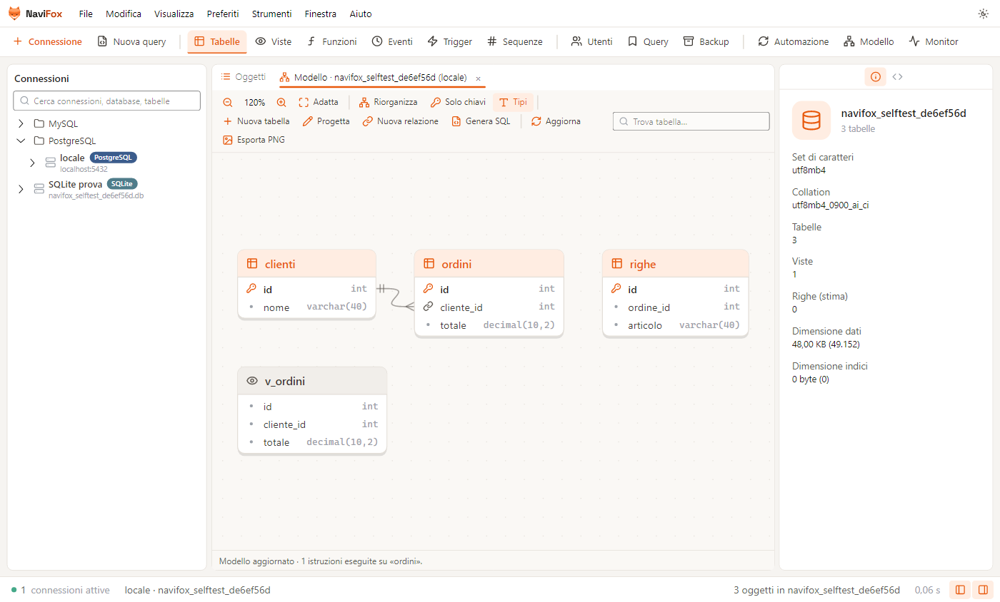
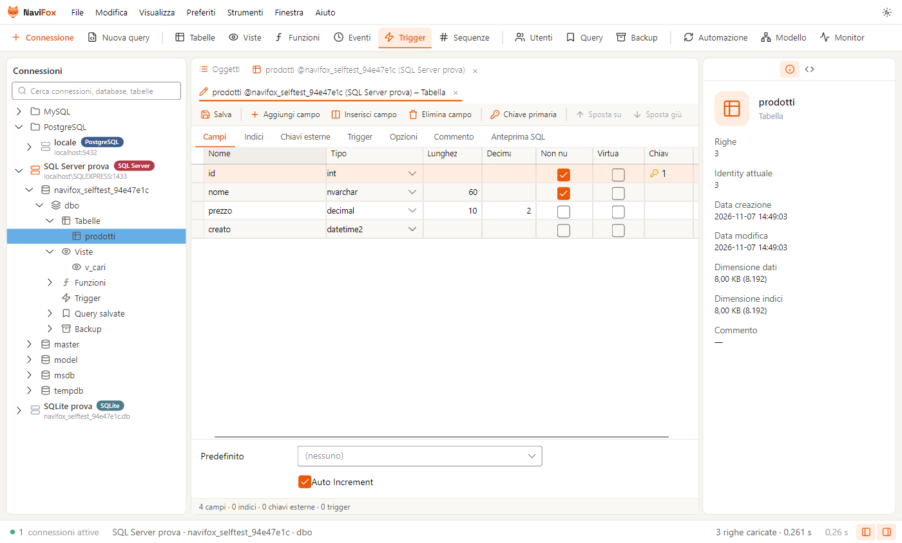
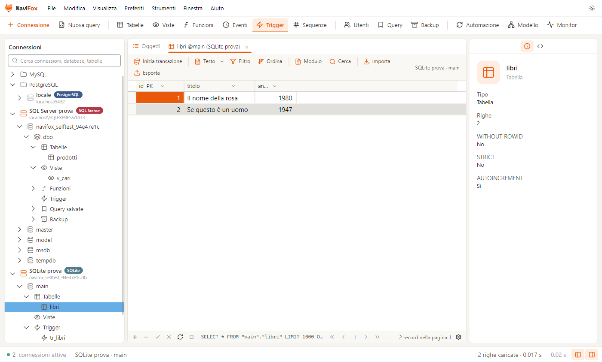
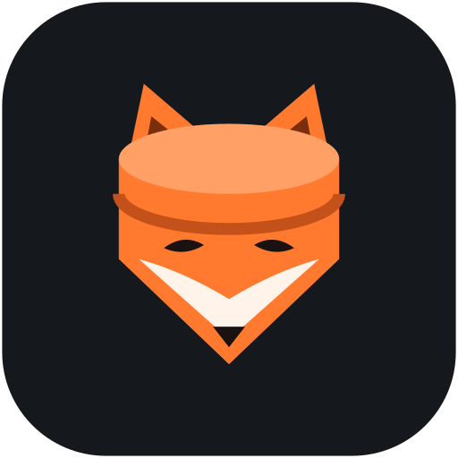

Esplora i tuoi database con il fiuto di una volpe.
NaviFox è il client desktop per MySQL, MariaDB, PostgreSQL, SQL Server e SQLite. Connessioni, query, struttura e dati in un'unica interfaccia veloce, chiara e tutta in italiano.

Cinque motori. Un solo client.
Gestisci tutte le tue connessioni da un unico posto, senza cambiare strumento a ogni progetto. Anche attraverso un tunnel SSH e con SSL.
Tutto quello che serve. Niente di più.
Dalla prima connessione al backup notturno: gli strumenti di tutti i giorni, pensati per lavorare in fretta e senza sorprese.
Connessioni organizzate
Cartelle e sottocartelle, colori e ambienti. Sulle connessioni di produzione NaviFox chiede conferma prima di ogni modifica.
Editor SQL
Autocompletamento di tabelle e colonne, formattazione, EXPLAIN, Query Builder visuale, query salvate e cronologia.
Griglia dati modificabile
Filtri, ordinamenti e transazioni. Vista modulo, editor JSON e immagini, copia come INSERT o UPDATE, chiavi esterne a un clic.
Progetta tabella
Campi, indici, chiavi esterne e trigger in un editor visuale, con l'anteprima delle istruzioni SQL prima di salvare.
Modello ER
Il diagramma del database si disegna da solo. Crei le relazioni trascinando una colonna e generi lo script SQL dell'intero modello.
Trasferimento e sincronizzazione
Copia tabelle tra database con il registro di ogni istruzione, confronta struttura e dati e applica solo le differenze.
Backup e automazione
Dump SQL e ripristino, esportazione in CSV, Excel, JSON e altri formati, attività pianificate.
Server Monitor
Processi, variabili e stato del server, storico delle query al secondo e query più lente.
Grafici dai risultati
Trasforma il risultato di una query in barre, linee, area o torta senza uscire dall'editor.
Chiedi alla volpe. In italiano.
L'assistente conosce la struttura del database collegato e lavora con il fornitore che preferisci, anche con un modello installato sul tuo computer.
- Spiega cosa fa una query, passo per passo.
- Scrive l'SQL partendo da una frase: «i 10 clienti con più ordini nel 2025».
- Suggerisce indici e riscritture leggendo il piano di esecuzione.
- Corregge l'ultimo errore e ti propone la query giusta.

Guardala all'opera.
Schermate vere dell'applicazione: clicca per vederle a grandezza naturale.







Di giorno o di notte, la volpe si adatta.
Scarica NaviFox.
Installa, apri, connettiti. Pochi secondi e sei dentro i tuoi dati. Gli aggiornamenti arrivano da soli.

NaviFox è open source con licenza GPL-3.0: leggi il codice, segnala problemi, proponi miglioramenti.
github.com/Code965/NavifoxNon ancora disponibili: per ora NaviFox è solo per Windows.
Prima di iniziare.
È davvero gratuito?
Sì. NaviFox è gratuito e open source con licenza GPL-3.0: puoi usarlo anche al lavoro, senza abbonamenti né limiti.
Windows dice «editore sconosciuto». È normale?
Sì. L'installer non è ancora firmato digitalmente, quindi al primo avvio Windows SmartScreen chiede conferma: clicca Ulteriori informazioni e poi Esegui comunque.
Devo installare .NET o altro?
No. L'installer contiene già tutto quello che serve. Basta Windows 10 o 11 a 64 bit, e non servono permessi di amministratore.
Come si aggiorna?
Da solo: all'avvio NaviFox controlla se c'è una versione nuova e scarica solo le differenze. Puoi anche usare Aiuto › Verifica aggiornamenti.
Dove finiscono le mie password?
Restano sul tuo computer, cifrate con la protezione dati di Windows, in %APPDATA%\Navifox. NaviFox non le invia a nessuno.
L'assistente AI legge i miei dati?
No. Riceve la query e la struttura del database (nomi di tabelle e colonne), mai il contenuto delle righe. Con un modello locale (Ollama o LM Studio) non esce nulla dal computer.
Meno attrito tra te e i tuoi dati.
Prova NaviFox sul tuo prossimo progetto e facci sapere cosa ne pensi.